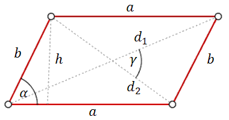
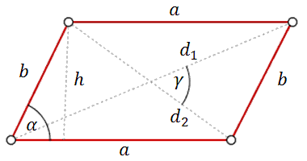

Równoległobok
Równoległobok - to czworokąt, który ma dwie pary
boków równoległych. Ponadto boki równoległe są tej samej długości.


Wzór na obwód równoległoboku: \[Ob=2a+2b\]
Wzory na pole równoległoboku: \[ P=a\cdot h\\[6pt] P=a\cdot b\cdot \sin
\alpha \\[6pt] P=\frac{1}{2}d_1\cdot d_2\cdot \sin \gamma \] gdzie:
\(a\),
\(b\) - to dwa sąsiednie boki równoległoboku,
\(\alpha \) - to kąt między bokami \(a\) i \(b\),
\(d_1\), \(d_2\) - to przekątne równoległoboku,
\(\gamma \) - to kąt między przekątnymi równoległoboku.
\(\alpha \) - to kąt między bokami \(a\) i \(b\),
\(d_1\), \(d_2\) - to przekątne równoległoboku,
\(\gamma \) - to kąt między przekątnymi równoległoboku.
W równoległoboku kąt rozwarty jest cztery razy większy od kąta ostrego \(\alpha\).
Zatem:
A.\( \alpha=36^\circ \)
B.\( \alpha=45^\circ \)
C.\( \alpha=60^\circ \)
D.\( \alpha=72^\circ \)
A
Różnica miar dwóch sąsiednich kątów wewnętrznych równoległoboku jest równa
\(30^\circ\). Kąt rozwarty tego równoległoboku jest równy
A.\( 105^\circ \)
B.\( 115^\circ \)
C.\( 125^\circ \)
D.\( 135^\circ \)
A
Dany jest równoległobok \(ABCD\). Na przedłużeniu przekątnej \(AC\) wybrano punkt
\(E\) tak, że \(|CE|=\frac{1}{2}|AC|\). Uzasadnij, że pole równoległoboku \(ABCD\) jest cztery razy
większe od pola trójkąta \(DCE\). 
Przekątna równoległoboku ma długość \(10\) cm i tworzy z krótszym bokiem kąt
prosty, a z dłuższym bokiem kąt \(30^\circ\). Oblicz długość krótszego boku tego równoległoboku.
\(\frac{10\sqrt{3}}{3}\)
Pole równoległoboku o bokach długości \(4\) i \(12\) oraz kącie ostrym \(30^\circ\)
jest równe
A.\( 24 \)
B.\( 12\sqrt{3} \)
C.\( 12 \)
D.\( 6\sqrt{3} \)
A
Punkty \(A=(-6-2\sqrt{2},\ 4-2\sqrt{2})\), \(B=(2+4\sqrt{2},\ -6\sqrt{2})\),
\(C=(2+6\sqrt{2},\ 6-2\sqrt{2})\) są kolejnymi wierzchołkami równoległoboku \( ABCD \). Przekątne
tego równoległoboku przecinają się w punkcie
A.\(S=(-1+4\sqrt{2},\ 5-5\sqrt{2}) \)
B.\(S=(-2+\sqrt{2},\ 2-4\sqrt{2}) \)
C.\(S=(2+5\sqrt{2},\ 3-4\sqrt{2}) \)
D.\(S=(-2+2\sqrt{2},\ 5-2\sqrt{2}) \)
D